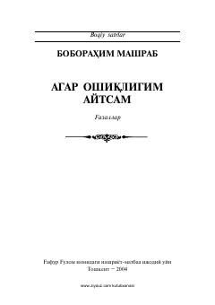

AOBoborahim Mashrabning ishq va muhabbat mavzusidagi g'azallari to'plami.
Ushbu to'plam o'zbek mumtoz adabiyotining yirik vakili Boborahim Mashrabning g'azallarini o'z ichiga oladi. Asarda shoirning ishq, ilohiy muhabbat va insoniy tuyg'ularga bo'lgan qarashlari badiiy yuksaklikda ifodalangan.